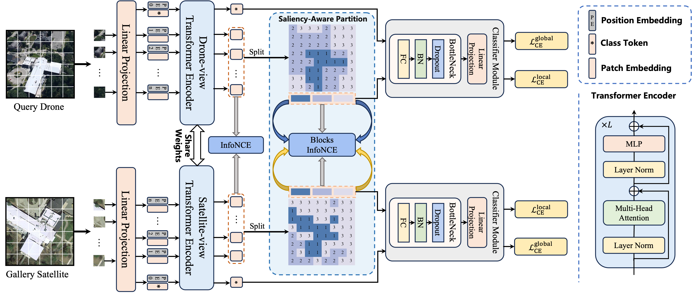

Ziqian Mo
Greetings! I'm currently pursuing my master's degree in Artificial Intelligence at Shenzhen University, under the supervision of Assoc. Prof. Meng Xu. I am on a mission to turn curiosity into impactful discoveries!
My research interest includes:
- Remote Sensing & Cross-view tasks
- Hyperspectral image super-resolution

Research

ESFS: Edge-Enhanced Feature Selection for Cross-View Geo-Localization
TGRS 2025
* Corresponding author.

SIGN: SALIENCY-AWARE INTEGRATED GLOBAL-LOCAL NETWORK FOR CROSS-VIEW GEO-LOCALIZATION (Accepted)
IGARSS 2025
* Corresponding author.

Spectral Modality-Aware Interactive Fusion Network for HSI Super-Resolution
ACCV 2024
* Corresponding author.

DeSAM2: Detection-Driven SAM2 for Hyperspectral Object Tracking
Whispers 2024
* Corresponding author.

Spectral Reconstruction via Dual Cross-Scanning and Cross-Attention Mechanisms
Whispers 2024
* Corresponding author.